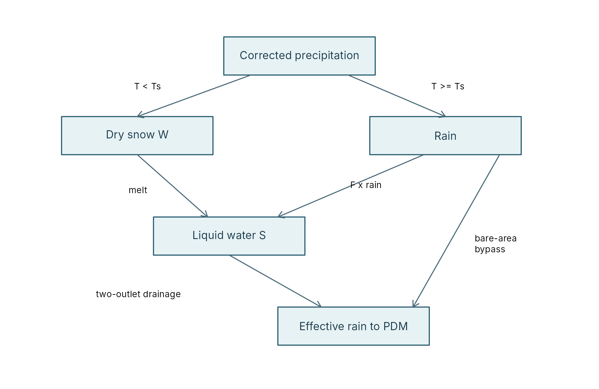
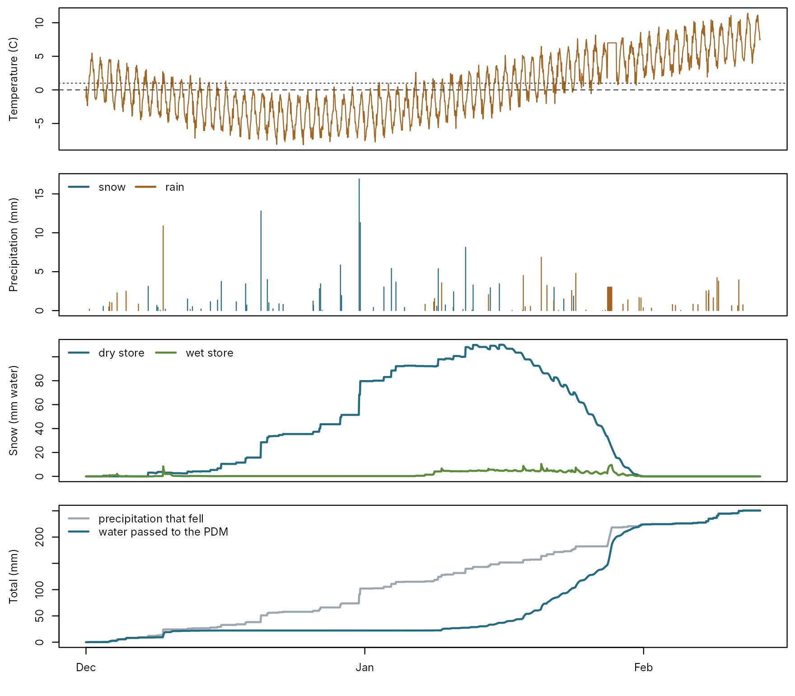
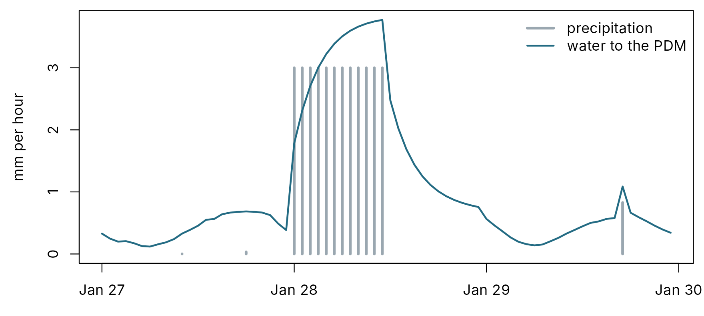
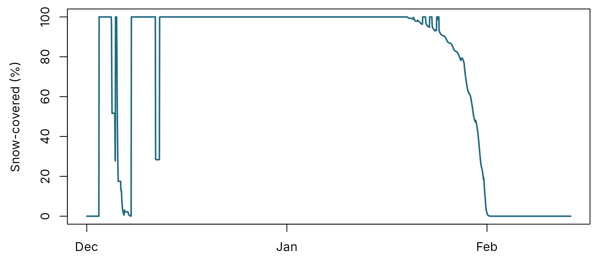
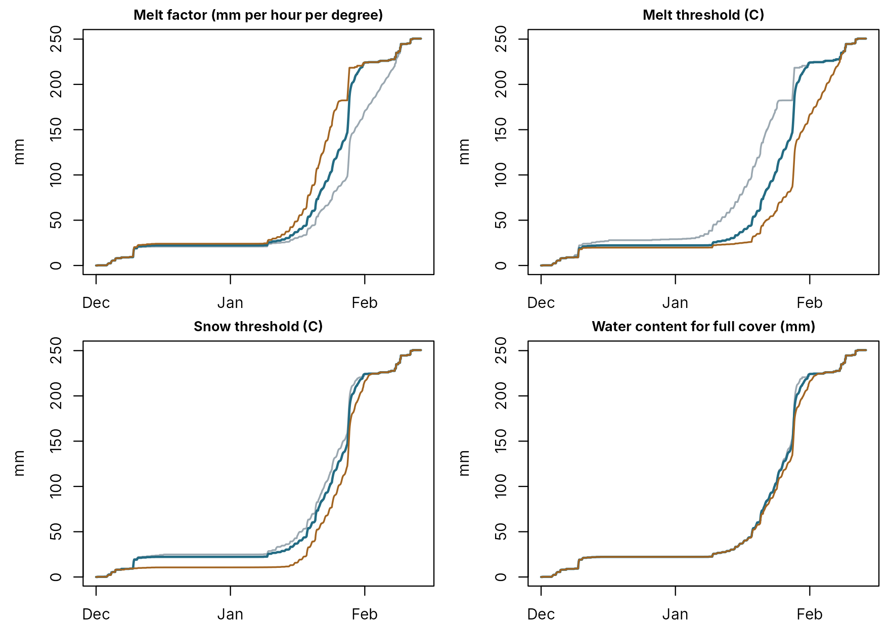
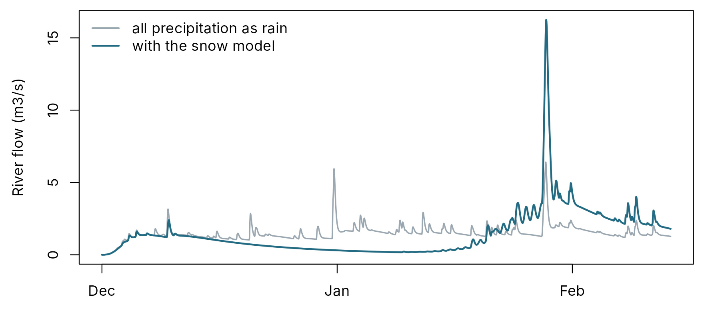

How the snow model works
pdmS7 documentation
Source:vignettes/snowpack-explained.Rmd
snowpack-explained.RmdSnow upsets a rainfall-runoff model. Snow that falls today may not reach the river for weeks, and then arrive all at once in a thaw, sometimes on top of heavy rain. pdmS7 handles this with PACK, a snow model developed at the Institute of Hydrology for real-time forecasting. PACK sits in front of the PDM: it takes precipitation and temperature, holds back what falls as snow, and passes on water to the PDM only as it melts and drains.
This article explains how it works in plain terms, with a winter of the model running. The equations are in an appendix, and in full on the Model equations page. For the PDM itself, see How the PDM works.
The idea in one picture

Snow is held back before it reaches the PDM. Rain on bare ground goes straight through.
The pack has two parts:
- a dry store: the snow and ice, measured as the depth of water it would make if melted (its water equivalent; 10 mm of water equivalent is roughly 10 cm of fresh snow);
- a wet store: liquid water held inside the pack, like water in a sponge.
Each hour, PACK asks three questions:
- Is it snowing or raining? Below a threshold temperature, precipitation is snow and joins the dry store. Above it, it is rain.
- How much melts? Above a melt threshold, snow melts in proportion to how warm it is. Meltwater moves to the wet store.
- How much drains out? The wet store drains, slowly at first and faster once it is holding more than a small fraction of the pack. What drains, plus any rain on snow-free ground, goes on to the PDM as effective rainfall.
A winter
Here is a winter of 75 days: mild at first, a long cold spell, then a gradual thaw, with one warm, wet day in the thaw.

A winter in PACK. From the top: temperature against the snow (dashed) and melt (dotted) thresholds; precipitation, as snow and rain; the dry and wet stores; and the water passed on to the PDM, against the precipitation that fell.
Three things to see:
- Snow is held back. Through the cold spell the dry store grows to about 110 mm, and the water passed to the PDM falls behind the precipitation (bottom panel): the gap between the lines is the water stored in the pack.
- The thaw pays it back. As temperatures rise, the pack melts and the gap closes. By the end the pack has gone and the two totals meet again: every millimetre comes out eventually.
- The wet store stays small. It holds only a few per cent of the pack before it starts to drain freely, so meltwater passes through within hours.
Rain on snow
The most dangerous moment is warm rain on a ripe pack. The rain itself reaches the river, and the warmth melts snow at the same time.

The warm, wet day in the thaw. Hourly precipitation (bars) and the water passed to the PDM (line). The pack adds meltwater to the rain.
#> precipitation_mm released_to_pdm_mm
#> 36.9 73.5Over these three days 37 mm of precipitation fell, but 74 mm reached the PDM: the extra came out of the pack. A forecast that ignored the snow would have missed it.
How much of the catchment is covered?
A deep pack covers the whole catchment. As it thins, bare patches appear first where the snow was shallowest, and rain on those patches goes straight through. PACK tracks the covered share with a depletion curve: the less water the pack holds, the less ground it covers. Fresh snow resets the cover to complete for a while, because new snow falls everywhere.

Snow cover through the winter. Cover is complete while the pack is deep or freshly topped up, and shrinks as the pack thins in the thaw.
What each setting does
Each panel changes one setting and shows the running total of water passed to the PDM, so the timing of the release can be compared.

Cumulative water passed to the PDM as each setting is lowered (light), left at its default (dark) and raised (orange). Steeper is earlier.
| Setting | What it changes |
|---|---|
melt_factor_mmh_c |
How fast snow melts for each degree of warmth. Larger means earlier, sharper thaws |
melt_threshold_c |
The temperature above which snow melts. Higher delays the thaw |
snow_threshold_c |
The temperature below which precipitation falls as snow. Higher means more snow and more held back |
adc_depth_mm |
How much water the pack needs to cover the whole catchment. Larger means bare patches appear sooner as the pack thins: more rain passes straight through, but less snow is left in the sun to melt each hour. Here the slower melt wins and the release comes a little later |
lower_rate_h, upper_rate_h,
retention_fraction
|
How quickly the wet store drains. These shape the release over hours, not weeks |
precipitation_factor |
Scales all precipitation, as the PDM’s fc does for
rain; use one or the other |
The defaults come from the parameter file of an operational system; their time units are not stated in the source and are assumed to be hourly. Treat them as a starting point to calibrate, not as values for a particular catchment.
Snow and the PDM together
sim_snow_pdm() runs PACK and the PDM together: PACK’s
water passed on becomes the PDM’s rainfall. Here is the river flow from
the same winter, with and without the snow model.

River flow from the same winter, treating all precipitation as rain (light) and with the snow held back by PACK (dark). The snow model removes the winter floods that could not happen and moves the water into the thaw.
Without the snow model, storms through December and January raise floods that could not have happened, because that precipitation fell as snow. With it, the cold spell is quiet, and the warm, wet day in the thaw brings by far the largest flood: about 16 m3/s, against 6 m3/s without the snow, because meltwater adds to the rain.
When the two models are used together, keep the PDM’s rainfall factor
fc at 1 and adjust precipitation only with PACK’s
precipitation_factor, so it is not corrected twice.
The equations, briefly
In this appendix, depths are millimetres of water over the catchment, is temperature and the internal time step in hours. The full set, with the details of the implementation, is on the Model equations page.
Rain or snow. Precipitation is snow when and rain otherwise.
Melt. With snow-covered fraction , melt factor and melt threshold , the melt is limited by the snow available:
Drainage. Rain on the covered part and meltwater join the wet store . It drains through a slow outlet always, and a faster one above a retention level :
limited to what is there, and zero below the drainage threshold temperature.
Water passed on. : drainage, plus rain on bare ground.
Cover. With total water content and the content for full cover, , reset to full cover by fresh snow.
Further reading
-
Your first model run runs the
PDM on your own data; add
sim_snow_pdm()where snow matters. - Institute of Hydrology. PACK: A Pragmatic Snowmelt Model for Real-time Use. NORA 15304.